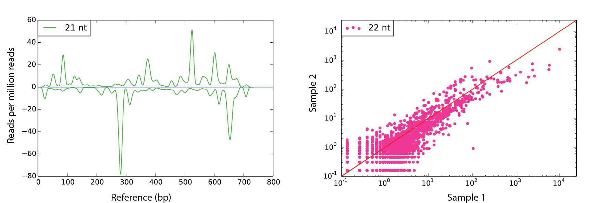

SCRAM
SCRAM is lightweight Python package for aligning small RNA reads to one
or more reference sequences and producing publication-quality images.
Developed by Stephen Fletcher @ the laboratory of Prof. Bernie Carroll, University of Queensland
Installation
Unpack to a location of your choice. Use directly :
python path/to/scram analysis reference [opt]
Or install in your path :
- If your Python 2.7 path differs from
/usr/bin/python- modify line 1 of scram to reflect your python path. - Make scram executable :
chmod +x /path/to/scram
scram analysis reference [opt]Required Python packages:
matplotlib
numpyInput File Format
Reference File : DNA nucleotides only (AGCT) - FASTA format
Sequence File : Collapsed reads - DNA nucleotides only (AGCT) - FASTA format
Post-processing of FASTQ reads to collapsed FASTA format can be carried out using the
FASTX-Toolkit from the Hannon Lab.
Collapsed reads are unique, and contain the read count in the header.
An example of the required sequence file format:
head seq1.fa
>1-607041
TCGGACCAGGCATCATTCCCC
>2-202886
TCGGACCAGGCTTCATACCCC
>3-71446
TCCCAAATATAGACAAAGCA
Usage
scram analysis_type reference_file [-h] [-s1 SEQ_FILE_1] [-s2 SEQ_FILE_2] [-s3 SEQ_FILE_3]
[-s4 SEQ_FILE_4] [-nt SRNA_LEN] [-f FILE_NAME]
[-seq_list SEQ_LIST] [-min_read MIN_READ_SIZE]
[-max_read MAX_READ_SIZE] [-min_count MIN_READ_COUNT]
[-win SMOOTH_WIN_SIZE] [-ylim YLIM] [-no_display] [-split]
[-pub] [-V]
Analysis types
den: align reads of a single sRNA class (eg. 21 nt) from a single sequence file to a single reference sequence (-s1and-ntrequired)denAv: align reads of a single sRNA class (eg. 21 nt) to a single reference. Reads are the average from 2 replicate sequence files (-s1,-s2and-ntrequired)mnt3dm: align 21, 22 and 24 nt reads from a single sequence file to a single reference sequence (-s1required)multiDen: align reads of a single sRNA class (eg. 21 nt) from a multiple sequence files to multiple reference sequences (-seq_listrequired)multiDen: align reads of a single sRNA class (eg. 21 nt) from a multiple replicate sequence files to multiple reference sequences (-seq_listrequired)CDP: count aligned reads of a single sRNA class (eg. 21 nt) to multiple reference sequences. Counts for two sequence files are plotted as (x,y) coordinates for each reference (-s1,-s2and-ntrequired)avCDP: count aligned reads of a single sRNA class (eg. 21 nt) to multiple reference sequences. Counts for two replicate sequence files are plotted as (x,y) coordinates for each reference (-s1,-s2,-s3,-s4and-ntrequired)sCDP: count aligned reads of a single sRNA class (eg. 21 nt) to multiple reference sequences. Single sequence file required. CSV output only. (-s1and-ntrequired)
-h: Help message-s1: Sequence file 1-s2: Sequence file 2-s3: Sequence file 3-s4: Sequence file 4-nt: sRNA length to analyse-f: Figure output file name (if not auto-generated)-seq_list: Text (.txt) file with full path of sequence file on each line (single replicate) or two tab-delimited sequence file paths per line (two replicates)-min_read: Minimum length of sRNA reads used for normalisation (default=18)-max_read: Maximum length of sRNA reads used for normalisation (default=32)-min_count: Minimum read count for an sRNA to be aligned and used for normalisation (default=1)-win: Window size for smoothing of den plots (default=50)-ylim: +/- y-axis limit on plots-no_display: Do not display plot on screen-split: Split CDP read alignment counts based on no. of alignments-pub: Remove all labels from density maps for publication-V: Show program's version number and exit
Examples
scram den ./ref.fa -s1 seq1.fa -nt 24 -win 30 -f fig1.pdf
scram mnt3dm ./ref.fa -s1 seq1.fa -win 20 -ylim 110 -f fig2.pdf scram CDP ./cDNAs.fa -s1 seq1.fa -s2 seq2.fa -nt 21 -f fig3.pdf -split